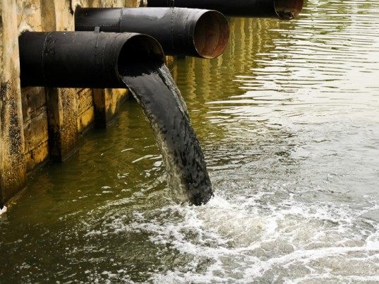
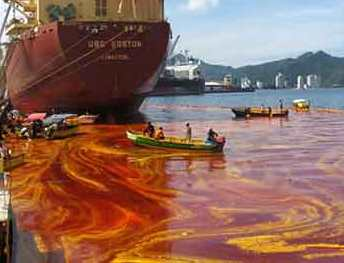
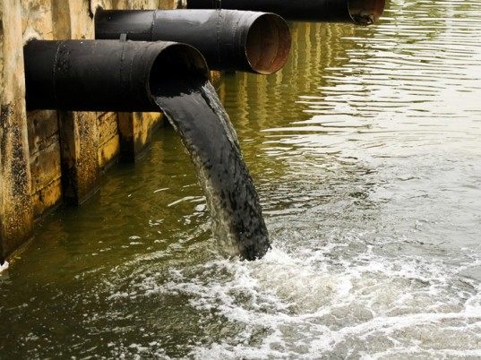
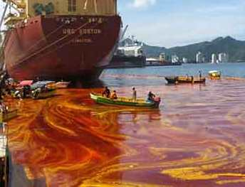

 

| ||
|
Project Water pollution Air Pollution Soil Pollution Sound Pollution |
WATER POLLUTION & WATER POLLUTION CONTROL
Water pollution is a major global problem which requires ongoing evaluation and revision of water resource policy at all levels (international down to individual aquifers and wells). It has been suggested that water pollution is the leading worldwide cause of deaths and diseases,and that it accounts for the deaths of more than 14,000 people daily.An estimated 580 people in India die of water pollution related illness every day.About 90 percent of the water in the cities of China is polluted.As of 2007, half a billion Chinese had no access to safe drinking water.In addition to the acute problems of water pollution in developing countries, developed countries also continue to struggle with pollution problems. . Water is typically referred to as polluted when it is impaired by anthropogenic contaminants and either does not support a human use, such as drinking water, or undergoes a marked shift in its ability to support its constituent biotic communities, such as fish. Natural phenomena such as volcanoes, algae blooms, storms, and earthquakes also cause major changes in water quality and the ecological status of water. Categories Although interrelated, surface water and groundwater have often been studied and managed as separate resources.Surface water seeps through the soil and becomes groundwater. Conversely, groundwater can also feed surface water sources. Sources of surface water pollution are generally grouped into two categories based on their origin. | |